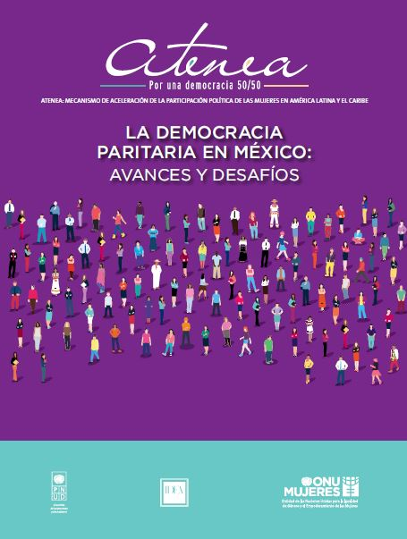

Se han dado distintas denominaciones para referirse al movimiento contra la discriminación y el uso de los animales no humanos. En la mayoría de los casos, éstas no resultan sinónimas y refieren posiciones que, si bien relacionadas entre sí, no resultan. Se han dado distintas denominaciones para referirse al movimiento contra la discriminación y el uso de los animales no humanos. En la mayoría de los casos, éstas no resultan sinónimas y refieren posiciones que, si bien relacionadas entre sí, no resultan coincidentes. Exploraremos cada una de ellas a continuación, repasando asimismo las ventajas e inconvenientes comunicativos que arrastra cada uno de los términos que han sido empleados.
Pese a ser utilizado de modo muy corriente, es éste un término enormemente ambiguo, falto de contenido preciso, que no sirve para delimitar ninguna toma de postura concreta en lo que ha de suponer la consideración que se preste a los intereses de los animales. Hablar de "defensa de los animales" es poco más que no decir nada. Esta expresión únicamente apela a que los animales no humanos merecen alguna clase de protección, pero sin especificar exactamente qué se entiende por ésta. Por ello, esta etiqueta ha sido utilizada para referir tanto al movimiento por los derechos animales como al movimiento por el bienestar animal, que busca únicamente mejorar el modo en que son tratados los animales al ser usados, pero sin cuestionar tal utilización. Así, este término tan vago no implica ningún posicionamiento real con respecto a la cuestión del especismo o del uso de animales. Es necesario echar mano de expresiones más precisas.

El término "liberación" parece en principio que podría constituir una denominación más concreta. Conlleva afirmar que se da una situación de opresión o esclavitud de los animales no humanos a manos humanas (que tendría lugar de forma paradigmática en el caso de su utilización como recursos). De este modo, el uso del término "liberación animal" debería ser análogo al de abolición (o lucha por la abolición) del uso de animales. El problema es que términos como "opresión" y "liberación" resultan también un tanto imprecisos. Es un lugar común entre los defensores del bienestarismo la idea de que el mero uso de los animales no supone ninguna opresión (afirmación que descansa en la opinión de que el daño que padecen los animales por tal uso es mínimo si se hace con el cuidado suficiente). Y muchos así hacen uso del término liberación mientras asumen un punto de vista bienestarista. Esto ha ocurrido especialmente como consecuencia del gran éxito alcanzado por la conocida obra de Singer, Liberación Animal. Como es sabido, Singer considera que sólo un reducido número de animales poseen un interés en vivir (lo que anula toda reclamación de un derecho a la vida para ellos y vuelve permisibles ciertos usos de los animales). El planteamiento de Singer puede ser rebatido haciendo hincapié en que todo ser con la capacidad de tener experiencias positivas tiene un interés no sólo en no sufrir, sino también en disfrutar. Y, al matar o confinar a un animal (lo que ocurre cuando son utilizados), se le priva del disfrute que podría tener de estar vivo y en libertad (al margen de los distintos tipos de sufrimiento que se les ocasiona en cada caso). De esta forma, los animales con la capacidad de poseer experiencias sí tienen un interés en vivir, y su uso sí les daña (desde un punto de vista no especista sólo pueden ser aceptables ciertos usos de los animales no humanos si el mismo uso resulta aceptable en el caso de que las víctimas sean humanas). Lamentablemente, estos argumentos a menudo no consiguen la difusión que ha logrado el libro de Singer, y el término "liberación animal" no es identificado claramente con un rechazo del uso de animales. Pero hay otra fuente adicional de confusión con respecto al uso del término "liberación" que, en los países en los que el movimiento contra el uso de animales ha logrado un mayor peso, resulta todavía más problemática. í‰sta se debe a que una de las distintas estrategias dedicadas a luchar contra el uso de animales consiste en el rescate de animales de aquellos lugares donde están siendo utilizados. En este sentido, liberación se entiende, literalmente, como el salvamento de estos animales. De esta forma, mediante el uso de esta terminología se puede confundir a todo el movimiento en general con una estrategia muy particular dada dentro de éste (que, además, es rechazada por sus efectos contraproducentes por parte del movimiento). Hay que concluir, pues, que el término "liberación animal" conlleva problemas que hacen que su uso resulte problemático cuando no se evidencia su sentido de oposición al uso de animales y no se evita la confusión con el rescate (literal) de animales.

Para vernos libres de las ambigí¼edades atribuíbles a la expresión "liberación animal" podemos optar por el uso del término abolicionismo. Parece que estamos aquí ante un vocablo que definiría de forma mucho más explícita a qué nos referimos. Aun así, arrastra todavía este término un inconveniente fácilmente adivinable. í‰ste viene dado por el hecho de que esta misma palabra ha sido utilizada con anterioridad para referir otros movimientos, fundamentalmente el dirigido a conseguir la abolición la esclavitud humana. Este hecho, ciertamente, arroja una luz muy interesante sobre el sentido del término, al ayudar a hacer visible el paralelismo existente entre la esclavitud humana y la sufrida por los demás animales. Ahora bien, por otra parte, hace que el solo vocablo "abolicionismo" resulte insuficientemente descriptivo fuera de un contexto en el que sepamos que nos referimos al uso de los animales no humanos. Asimismo, el término abolicionista se presta a confusión por otros motivos. Ocurre que otra de las estrategias para la lucha contra el uso de animales ha consistido en buscar la abolición de determinados usos de los animales. Y el término abolicionista se ha venido a identificar con esta vía de acción en concreto. De esta forma, al usar esta palabra lo que se puede entender es que nos referimos no en general al movimiento para acabar con el uso de animales, sino a la estrategia que busca hacerlo mediante la consecución de prohibiciones paulatinas de los distintos usos padecidos por los animales. Ello nos llevaría a necesitar otro término para referir a la oposición al uso de animales de manera general.

Una denominación de carácter distinto nos la proporciona el término "derechos". Por definición, quien es titular de derechos no puede ser utilizado como una propiedad, pues la posesión de derechos precisa, para poder ser ejercida, la posibilidad de disponer sobre uno mismo (sin que otros, pues, nos posean). Por ello, quienes hablan, por ejemplo, del "derecho" a una matanza indolora o a una crianza en régimen abierto lo hacen porque desconocen el sentido real que tiene el término derecho. El reconocimiento de los derechos animales conlleva, así, que los animales no pueden ser utilizados. Pero, implica algo más: veta todo daño que los animales padezcan a nuestras manos, tenga esto o no lugar en el marco de su utilización como recursos. Sin embargo, pese a que utilizado con rigor el sentido del término "derechos" es ciertamente preciso, a menudo no resulta adecuadamente entendido, por mor de varias confusiones muy comunes La primera, a la que de algún modo nos hemos referido ya, se debe al hecho de que el público a menudo desconoce cual es el verdadero significado del término derechos. Lo confunde, y cree que es sinónimo de protección legal, lo cual no es acertado. Un derecho es un tipo específico de protección legal, que implica la imposibilidad de ser poseído por otros. Una regulación del modo en que los animales son usados no implica el reconocimiento de derecho alguno a estos (del mismo modo en que una ley protegiendo una obra de arte no reconoce derechos a ésta). Por el contrario, constituye únicamente una limitación en el modo en que puedan ser empleados lo que se considera que son ciertos recursos (los animales no humanos). De esta forma, de hecho, la regulación de la utilización de animales supone negar que estos tengan derechos “pues, si los tuviesen, no podrían ser usados“. La segunda confusión se debe al hecho de que el término derechos puede ser utilizado en un sentido tanto jurídico (en referencia a los derechos legales, que el derecho garantiza) como moral (si creemos que los individuos poseemos derechos independientemente de que la ley no nos los reconozca). Ocurre que, si bien algunas teorías éticas defienden la existencia de derechos morales, muchas otras, por el contrario, rechazan tal idea (éstas, dependiendo de cada caso, señalan que debemos hablar únicamente de deberes y obligaciones a cumplir, intereses a respetar, virtudes a cultivar, etc., pero no de derechos, pues estos no son más que una invención). Ante esto, a menudo se incurre en la confusión consistente en creer que la defensa de derechos legales para los animales implica el seguimiento de una teoría ética que defienda la existencia de derechos morales. í‰ste no es el caso. Un seguidor de, por ejemplo, el utilitarismo o una ética de la virtud no aceptará la existencia de derechos morales. Sin embargo, puede perfectamente reclamar que, dado el marco jurídico actualmente vigente, aquellos sujetos o intereses que deben ser respetados se vean protegidos por derechos legales. La reivindicación de derechos legales para los animales no humanos es perfectamente compatible con distintas posiciones éticas, asuman o no la teoría de los derechos morales. Una última confusión se da cuando, por el hecho de buscar el reconocimiento de derechos jurídicos, se supone que el ámbito en el que se debe defender a los animales es únicamente el legal, de manera que habrá que seguir una estrategia abolicionista. Esto no es necesariamente así. De hecho, el ámbito al que esencialmente deberíamos dirigir nuestros esfuerzos es el de la opinión pública, pues son los consumidores quienes tienen la posibilidad de ir terminando con el uso de animales, mediante el fin de su demanda. En definitiva, estas confusiones, pese a basarse en una comprensión inadecuada o insuficiente del término "derechos animales", suponen un obstáculo a la hora de que la idea que verdaderamente recoje este concepto sea apropiadamente entendida. A pesar de ello, se trata de una expresión que nos permite facilitar a la gente una idea de cuál es nuestro planteamiento, a lo cual ayuda el paralelismo que se establece con otras causas que han reivindicado o reivindican derechos para algún colectivo dentro del grupo humano. Con todo, ha de procurarse, siempre que ello sea posible, incluir explicaciones de lo que por "derechos animales" se entiende, para minimizar los errores en su comprensión.